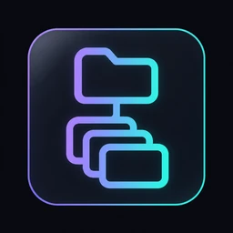
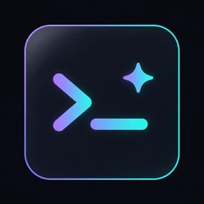
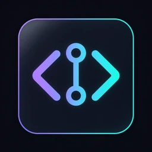
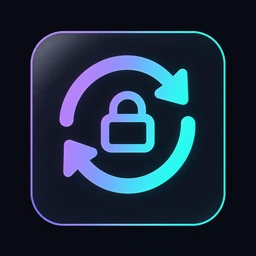
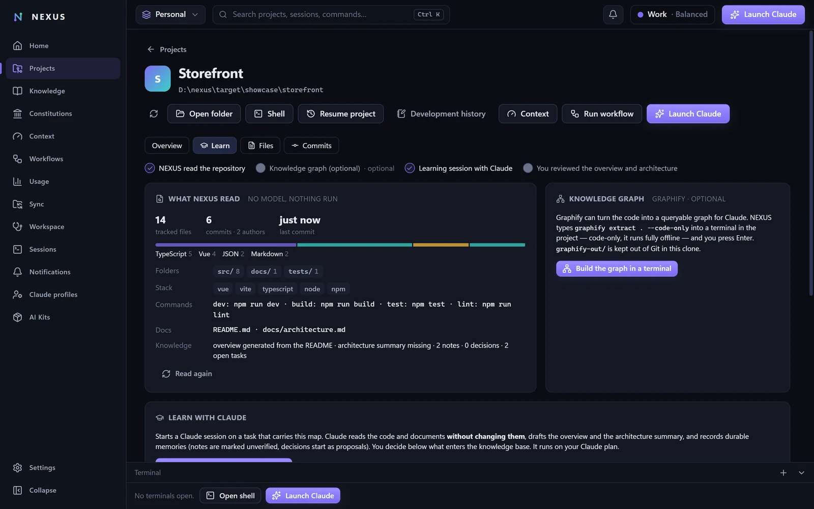

Workspaces & projects
Group your repositories into workspaces. Start one in an empty Git repo, add projects from a folder or straight from Git.
NEXUS is a desktop workbench for Claude Code. One workspace for every project, sessions that start informed, rules Claude actually follows — and the whole setup travels to your next computer through your own Git repository.
Claude Code stays Claude Code. NEXUS organises who works where, what Claude should know, which rules apply, and what happened.

Group your repositories into workspaces. Start one in an empty Git repo, add projects from a folder or straight from Git.

Launch Claude Code in the built-in terminal with the right profile, project context and NEXUS tools. Resume any session later.
NEXUS maps a new project itself; a guided Claude session drafts its overview and architecture. You decide what enters the knowledge base.
Tasks, decisions, notes and constitutions as Markdown in your workspace — read formatted, edited in place, synced changes approved by you.

Browse a project's code in a read-only viewer and its history with changed files and diffs. Files that may hold secrets are never shown.

Reviewed Git sync — inspected commits, fast-forward pulls, never a force-push — and a guided restore on your next computer.

NEXUS reads the repository itself — files, languages, docs, history — then a guided Claude session drafts the overview and architecture for you to accept.
Point NEXUS at an empty private repository and pick a template — AI Engineering Pro brings 284 reviewed rules, 11 skills and 7 workflows, loaded only when relevant.
From a folder or straight from Git. Each project gets a portable context — overview, architecture, current state, environment — that travels with the workspace.
Learn the project, launch sessions with the right context, run workflows whose quality gates you approve, and sync everything through your own Git.
Free and open source (MIT OR Apache-2.0) for Windows, macOS and Linux. You need Claude Code and Git.